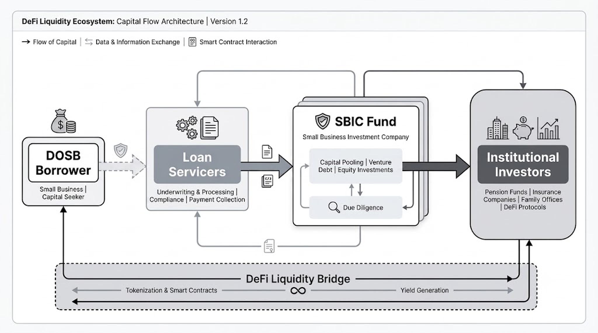

Bridging the Financing Gap for Diverse-Owned Small Businesses (DOSBs)
Fair and equitable capital access leveraging Distributed Ledger Technology to dismantle systemic barriers.
Problem
Diverse entrepreneurs faced systemic capital access disparities, with 86% of Black-owned firms having unmet funding. Existing DeFi solutions were too complex and lacked trust for institutional capital allocators.
Solution
Developed a decentralized capital bridge using Distributed Ledger Technology (DLT), mapped to intuitive visual models (like "Global Pass") to abstract on-chain complexity.
Impact
Simplified the borrower journey, fostered trust among institutional allocators, and established a scalable decentralized finance equity framework.
The Challenge
Systemic disparities in traditional finance continue to stifle growth for diverse entrepreneurs. I set out to architect a decentralized liquidity bridge that simplifies the complexities of DeFi while ensuring high-trust interactions for DOSB borrowers and institutional investors.
Unmet funding for black-owned firms
Higher interest rates for diverse owners
My Role
As the Product Designer and UX System Architect, I led the strategic vision for the liquidity bridge. I conducted comprehensive ecosystem audits, facilitated cross-functional alignment workshops with fintech leaders, and personally architected the core complex component patterns for institutional liquidity management.
My mandate was to translate complex DeFi protocols into human-centric interfaces, establishing strong defaults that remove manual gatekeeping and foster financial equity.
Research & Empathy
Understanding the Core Users
I conducted extensive user research to ground our highly technical definition of Distributed Ledger Technology (DLT) into human-centered needs. I interviewed key stakeholders across the ecosystem: Larissa (Healthcare DOSB Owner), Phil (Loan Originator Manager), Anna (Loan Service Specialist), Amy (Asset Manager), and William (Institutional Investor).
The Core Technology: Distributed Ledger Technology (DLT)
As defined in our strategic baseline, DLT is the foundational infrastructure from which blockchains are created. Its primary functions are allowing users to view any changes (and who made them), reducing the need to audit data, ensuring data reliability, and restricting access only to those who need it. Here is how I mapped these specific DLT capabilities into core user needs:
The DOSB Owner
Larissa
Only provides access to those that need it.
"I need a secure platform where I can safely share my sensitive business identity and financial credentials to get funding, knowing my data is strictly controlled."
The Institutional Investor
William & Amy
Reduces the need to audit data and ensures data is reliable.
"I need a transparent, tamper-proof system where I can confidently invest capital without spending excessive time and money auditing the underlying business data."
The Loan Servicer & Originator
Anna & Phil
The infrastructure allows users to view any changes and exactly who made them.
"I need an immutable, traceable ledger to efficiently track loan terms, repayments, and stakeholder approvals without ever disputing the history of the transaction."
The Compliance & Security Officer
System Governance
Reduces the need to audit data and provides highly restricted access.
"I need an automated infrastructure where security and trust are built natively into the system, drastically minimizing the friction of manual data verification."
01. Technical Architecture
Understanding the Ecosystem
The flow of capital in a decentralized environment requires absolute transparency between stakeholders. I mapped the architecture to ensure that every participant understands their position within the DLT bridge.

The DeFi Liquidity Bridge acts as the central conduit, tokenizing debt and automating smart contract interactions to remove manual gatekeeping.
Strategic Principles
Radical Transparency
Every on-chain event must be surfaced with clear provenance to build institutional confidence.
Minimized Latency
Automated triggers replace manual loan servicing, reducing the funding gap from weeks to seconds.
02. User Experience
Designing for Trust
Problem Statement: How do we make blockchain credentials feel as familiar and secure as a physical black card? The solution was the "Global Pass"—a visual anchor for the ecosystem's identity system.

Tiered Identity
I defined four distinct tiers of access: Personal, Business, Verified+, and Corporate. Each carries its own set of smart contract permissions, allowing for progressive disclosure of complex financial tools.
Visual Strategy
By using sophisticated textures and high-end typographic treatments, we established a sense of stability and prestige—moving away from the "crypto-aesthetic" toward institutional maturity.
How Wells Pass is Created
Small Business Owner
Pass
23 Mar 2020
23 Mar 2020
Wells Fargo
Pass
23 Mar 2020
23 Mar 2020
Wells Fargo
Where Wells Pass is Used
Investor
Pass
23 Mar 2020
23 Mar 2020
Wells Fargo
Pass
23 Mar 2020
23 Mar 2020
Wells Fargo
"Trust is not built by hiding complexity, but by anchoring it in metaphors the user already respects."
03. Governance Systems
Asynchronous Collaboration
Institutional participation in DOSB funds requires constant consensus. I designed a "Dual-Level Proxy Voting System" that integrates governance directly into the financial dashboard.
Yield Strategy: SBIC-04
Should the fund increase allocation to Series A diverse-led tech firms?
I placed voting modules directly alongside real-time Net Asset Value (NAV) and yield charts. This ensures that every decision is backed by current on-chain data, reducing friction for time-constrained fund managers.
- Automated smart contract triggers upon vote resolution.
- Zero-knowledge proof identity verification for voters via Global Pass.
- Real-time sentiment tracking for upcoming liquidity events.
04. Final Designs
High-Fidelity Interfaces
01. Portfolio Overview
.png)
A modern AlphaAsset dashboard providing real-time valuation, net liquidity metrics, and a detailed breakdown of active accounts.
02. Notifications Center
.png)
A centralized hub for security alerts, market updates, and compliance requirements to ensure investors stay informed.
03. My Wells Pass Management
.png)
Active pass management showing the user's institutional identity clusters, hardware key authentication, and active proxy levels.
04. Ecosystem Details
.png)
Further deep-dive analytics for high-value on-chain transactions and institutional data.
Retrospective & Impact
By grounding the backend complexity of Distributed Ledger Technology in familiar visual metaphors like the "Global Pass," we successfully established a bridge for capital that previously felt inaccessible. I focused on making the "systemic architecture" invisible, allowing users to focus on what matters: capital and growth.
The result was a decrease in onboarding friction and an increase in institutional trust. This project proved that for senior UX practitioners, our job isn't just to make things usable—it's to make them equitable.
Architecture as Equity.
Systems design is the ultimate lever for social change. By restructuring the protocol, we didn't just change the interface; we changed the outcome for thousands of entrepreneurs.